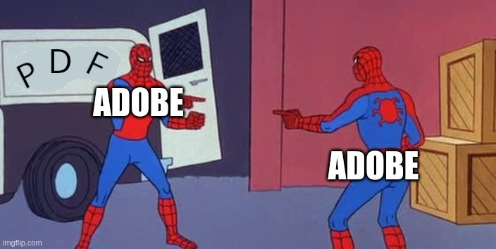

Parallel and/or LAzY Analyzer for PDF 🏖️
About
There are already too many PDF libraries, unfortunately none of which does everything that everybody wants it to do, and we probably don't need another one. It is not recommended that you use this library for anything at all, but if you were going to use it for something, it would be specifically one of these things and nothing else:
- Accessing the document catalog, page tree, structure tree, outline, content streams, cross-reference table, XObjects, fonts, annotations, and other low-level PDF metadata.
- Obtaining the absolute position and attributes of every character, line, path, and image in every page of a PDF.
The purpose of PLAYA is to provide an efficent, parallel and parallelizable, pure-Python and Pythonic (for its author's definition of the term), lazy interface to the internals of PDF files.
But, it does more than that! It also includes a command-line interface which can dump out various types of PDF data and metadata quickly. For instance, you might want to dump out all the PDF operators in all the content streams on all the pages:
playa --content-streams my-awesome-document.pdf
Or you could look at the document outline or logical structure tree:
playa --outline some-interesting-stuff.pdf
playa --structure tagged-pdf-wow.pdf
And, yes, it does extract text, or also text objects (with associated metadata):
playa --text fascinating-research-paper.pdf
playa --text-objects colorful-presentation.pdf
Or images, in JPEG and PNM format (may not work for all images):
playa --images imagedir splashy-resume.pdf
Or fonts, in various esoteric formats (may not work for all fonts):
playa --fonts fontdir typographic-horror.pdf
If you just want to extract text from a PDF, there are better and/or faster tools and libraries out there, notably pypdfium2 and pypdf, among others. See these benchmarks for a comparison. Nonetheless, you will notice in this comparison that:
- PLAYA (using 2 CPUs) is the fastest pure-Python PDF reader by far
- PLAYA has no dependencies and no C++
- PLAYA is MIT licensed
PLAYA is also very good at reading logical structure trees. On my
town's 486-page zoning bylaw, extracting the entire tree with its text
contents as JSON using playa --structure takes only 23 seconds,
whereas pdfplumber --structure-text takes 69 seconds and pdfinfo
-struct-text (which doesn't output JSON) takes 110 seconds.
I cannot stress this enough, text extraction is not the primary use case for PLAYA, because extracting text from PDFs is not fun, and I like fun. Do you like fun? Then read on.
Installation
Installing it should be really simple as long as you have Python 3.8 or newer:
pipx install playa-pdf
Yes it's not just "playa". Sorry about that. If you wish to read
certain encrypted PDFs then you will need the crypto add-on:
pipx install playa-pdf[crypto]
Usage
Do you want to get stuff out of a PDF? You have come to the right place! Let's open up a PDF and see what's in it:
pdf = playa.open("my_awesome_document.pdf")
raw_byte_stream = pdf.buffer
a_bunch_of_tokens = list(pdf.tokens)
a_bunch_of_indirect_objects = list(pdf)
The raw PDF tokens and objects are probably not terribly useful to you, but you might find them interesting. Note that these are "indirect objects" where the actual object is accompanied by an object number and generation number:
for objid, genno, obj in pdf:
...
# or also
for obj in pdf:
obj.objid, obj.genno, obj.obj
Also, these will only be the top-level objects and not those found
inside object streams (the streams are themselves indirect objects).
You can iterate over all indirect objects including object streams
using the objects property:
for obj in pdf.objects:
obj.objid, obj.genno, obj.obj
In this case it is possible you will encounter multiple objects with
the same objid due to the "incremental updates" feature of PDF.
Currently, iterating over the objects in a particular stream is
possible, but complicated.
You can also access indirect objects by number (this will return the object with most recent generation number):
a_particular_object = pdf[42]
Your PDF document probably has some pages. How many? What are their numbers/labels? They could be things like "xvi" (pronounced "gzvee"), 'a", or "42", for instance!
npages = len(pdf.pages)
page_numbers = [page.label for page in pdf.pages]
You can also subscript pdf.pages in various other ways, using a
slice or an iterable of int, which will give you a page list object
that behaves similarly to pdf.pages. Pages and page lists can refer
back to their document (using weak reference magic to avoid memory
leaks) with the doc property.
Some (by no means all) helpful metadata
A PDF often contains a "document outline" which is a sequence of trees representing the coarse-grained logical structure of the document.
for entry in pdf.outline:
entry.title, entry.destination, entry.action, entry.element
for child in entry:
child.title, child.destination, child.action, child.element
...
If you are lucky it has a "logical structure tree". The elements here
might even be referenced from the outline above! (or, they might
not... with PDF you never know).
for element in pdf.structure:
for child in element:
...
sections = structure.find_all("Sect")
first_p = structure.find("P")
Now perhaps we want to look at a specific page. Okay! You can also look at its contents, more on that in a bit:
page = pdf.pages[0] # they are numbered from 0
page = pdf.pages["xviii"] # but you can get them by label (a string)
page = pdf.pages["42"] # or "logical" page number (also a string)
print(f"Page {page.label} is {page.width} x {page.height}")
Since PDF is at heart a page-oriented, presentation format, many types
of metadata are mostly accessible via the page objects. For instance
you can access the fonts used in page with, obviously, the fonts
property, or the annotations via the annotations property.
For example, annotations (internal or external links) are defined on pages (since their position would not make any sense otherwise). There are umpteen zillion kinds of annotations (PDF 1.7 sect 12.5.6) but they all have at least these attributes in common:
for annot in page.annotations:
annot.subtype, annot.rect, annot.props
The set of possible entries in annotation dictionaries (PDF 1.7 sect
12.5.2) is vast and confusing and inconsistently implemented, but you
can always access them by their names (as defined in the PDF standard)
via annot.props.
Accessing content
What are these "contents" of which you speak, which were surely created by a Content Creator? Well, you can look at the stream of tokens or mysterious PDF objects:
for token in page.tokens:
...
for object in page.contents:
...
But that isn't very useful, so you can also access actual textual and graphical objects (if you wanted to, for instance, do layout analysis).
for item in page:
...
Because it is quite inefficient to expand, calculate, and copy every possible piece of information, PLAYA gives you some options here. Wherever possible this information can be computed lazily, but this involves some more work on the user's part.
Using multiple CPUs
You may be wondering, what does "Parallel and Lazy" really mean?
PLAYA allows you to take advantage of multiple CPUs, which can greatly
speed up some operations on large documents. This parallelism
currently operates at the page level since this is the most logical
way to split up a PDF. To enable it, pass the max_workers argument
to playa.open with the number of cores you wish to use (you can also
explicitly pass None to use the maximum):
with playa.open(path, max_workers=4) as pdf:
...
Now, you can apply a function across the pages of the PDF in parallel
using the map method of pdf.pages, for example:
def get_page_size(page: Page) -> Tuple[int, int]:
return page.width, page.height
page_sizes = pdf.pages.map(get_page_size)
You could also just do this for certain pages by subscripting
pdf.pages (this can be a slice, an iterable of int, or a
generator expression over int and/or str):
some_page_sizes = pdf.pages[2:5].map(get_page_size)
There are some limitations to this, because it uses multiprocessing.
The function you pass to map must be serializable by pickle, which
in practice means that an inner function or lambda generally doesn't
work. You can get around this in a very Java-like way by passing a
callable object that encapsulates the necessary state. If you wish to
avoid traumatising readers of your code, then use functools.partial
instead:
pdf.pages.map(partial(myfunc, arg1=value1, arg2=value2))
Also, any value returned by your function must also be serializable.
There is a bit of magic that enables this to work for PDF objects
containing indirect object references, so you should be able to, for
instance, get the dests or annots from every page without any
trouble. But if you have your own complex objects that you return you
may encounter problems (or slowness).
An important note about coordinate spaces
Wait, what is this "absolute position" of which you speak, and which PLAYA gives you? It's important to understand that there is no definition of "device space" in the PDF standard, and I quote (PDF 1.7 sec 8.3.2.2):
A particular device’s coordinate system is called its device space. The origin of the device space on different devices can fall in different places on the output page; on displays, the origin can vary depending on the window system. Because the paper or other output medium moves through different printers and imagesetters in different directions, the axes of their device spaces may be oriented differently.
You may immediately think of CSS when you hear the phrase "absolute position" and this is exactly what PLAYA gives you as its default device space, specifically:
- Units are default user space units (1/72 of an inch).
(0, 0)is the top-left corner of the page, as defined by itsMediaBoxafter rotation is applied.- Coordinates increase from the top-left corner of the page towards the bottom-right corner.
However, for compatibility with pdfminer.six, you can also pass
space="page" to playa.open. In this case, (0, 0) is the
bottom-left corner of the page as defined by the MediaBox, after
rotation, and coordinates increase from the bottom-left corner of the
page towards the top-right, as they do in PDF user space.
If you don't care about absolute positioning, you can use
space="default", which may be somewhat faster in the future (currently
it isn't). In this case, no translation or rotation of the default
user space is done (in other words any values of MediaBox or
Rotate in the page dictionary are simply ignored).
In general, where the API provides you with coordinates, they are
translated to the device space, unless indicated otherwise (for
example, sometimes there is a rect property which gives the default
user-space rectangle, and a bbox property which gives device space).
Lazy object API
Fundamentally you may just want to know what is where on the page, and PLAYA has you covered there (note that the bbox is normalized, and in the aforementioned interpretation of "device space"):
for obj in page:
print(f"{obj.object_type} at {obj.bbox}")
# With space="screen" (the default)
left, top, right, bottom = obj.bbox
print(f" top left is {left, top}")
print(f" bottom right is {right, bottom}")
# With space="page" or space="default"
left, bottom, right, top = obj.bbox
print(f" bottom left is {left, bottom}")
print(f" top right is {right, top}")
Another important piece of information (which pdfminer.six does not
really handle) is the relationship between layout and logical
structure, done using marked content sections:
for obj in page:
print(f"{obj.object_type} is in marked content section {obj.mcs.mcid}")
print(f" which is tag {obj.mcs.tag.name}")
print(f" with properties {obj.mcs.tag.props}")
print(f" in structure element {obj.parent}")
The mcid here is the same one referenced in elements of the
structure tree as shown above (but remember that tag has nothing to
do with the structure tree element, because Reasons). Logical
structure elements can contain one or more marked content sections,
and the parent element can be found using the parent property on
content objects or the structure property on pages and Form
XObjects, which contains them indexed by mcid.
A marked content section does not necessarily have a mcid or
props, but it will always have a tag. Exceptionally, because
marked content sections may (unfortunately) be nested, you can find
the mcid of the nearest containing marked content section, if one
exists, with the mcid property on objects.
PDF also has the concept of "marked content points". PLAYA suports
these with objects of object_type == "tag". The tag name and
properties are also accessible via the mcs attribute.
You may also wish to know the complete stack of enclosing marked
content sections. This is accessible from the mcstack property.
Note that though it's called a "stack", it's actually a tuple. This
means that it is immutable, and you can check if it has changed from
one object to the next using the is operator.
All content objects can also refer back to their containing Page
from the page property. This uses weak reference magic in order to
avoid causing memory leaks.
Form XObjects
A PDF page may also contain "Form XObjects" which are like tiny
embedded PDF documents (they have nothing to do with fillable forms).
Simply iterating over a Page will not expand these for you which
may be a source of surprise, but you can recurse into them with the
flatten method, or with the convenience properties paths,
images, texts and glyphs. You can also identify them in
iteration because they have object_type == "xobject". The layout
objects inside are accessible by iteration, as with pages:
for obj in page:
if obj.object_type == "xobject":
for item in obj:
...
You can also iterate over them in the page context with
page.xobjects (this will also find Form XObjects contained inside
other Form XObjects, which is unfortunately a thing):
for xobj in page.xobjects:
for item in xobj:
...
Exceptionally, these have a few more features than the ordinary
ContentObject - you can look at their raw stream contents as well as
the tokens, and you can also see raw, mysterious PDF objects with
contents.
Graphics state
You may also wish to know what color an object is, and other aspects
of what PDF refers to as the graphics state, which is accessible
through obj.gstate. This is a mutable object, and since there are
quite a few parameters in the graphics state, PLAYA does not create a
copy of it for every object in the layout - you are responsible for
saving them yourself if you should so desire. This is not
particularly onerous, because the parameters themselves are immutable:
for obj in page:
print(f"{obj.object_type} at {obj.bbox} is:")
print(f" {obj.gstate.scolor} stroking color")
print(f" {obj.gstate.ncolor} non-stroking color")
print(f" {obj.gstate.dash} dashing style")
my_stuff = (obj.dash, obj.gstate.scolor, obj.gstate.ncolor)
other_stuff.append(my_stuff) # it's safe there
You should however definitely be aware that storing content objects to a list, then iterating over that list, will give unpredictable and undefined results! Don't do this, for instance:
# DO NOT do this
objs = list(page)
for obj in objs:
obj.gstate # ...is now undefined
Path Objects
Unlike pdfminer.six, PLAYA does not try to interpret paths (as rectangles or whatever) nor does it break them into "subpaths". You just get path segments (it does, however, do some basic normalization to remove redundant segments). You can look at the actual path segments in user space (fast):
for seg in path.raw_segments:
print(f"segment: {seg}")
Or in PLAYA's "device space" (not so fast):
for seg in path.segments:
print(f"segment: {seg}")
Text Objects
Since most PDFs consist primarily of text, obviously you may wish to
know something about the actual text (or the ActualText, which you
can sometimes find in obj.mcs.tag.props["ActualText"]). This is
more difficult than it looks, as fundamentally PDF just positions
arbitrarily numbered glyphs on a page, and the vast majority of PDFs
embed their own fonts, using subsetting to include only the glyphs
actually used.
Whereas pdfminer.six would break down text objects into their
individual glyphs (which might or might not correspond to characters),
this is not always what you want, and moreover it is computationally
quite expensive. So PLAYA, by default, does not do this. If you
don't need to know the actual bounding box of a text object, then
don't access obj.bbox and it won't be computed. If you don't need
to know the position of each glyph but simply want the Unicode
characters, then just look at obj.chars.
It is also important to understand that obj.chars may or may not
correspond to the actual text that a human will read on the page. To
actually extract text from a PDF necessarily involves Heuristics or
Machine Learning (yes, capitalized, like that) and PLAYA does not do
either of those things.
This is because PDFs, especially ones produced by OCR, don't organize text objects in any meaningful fashion, so you will want to actually look at the glyphs. This becomes a matter of iterating over the item, giving you, well, more items, which are the individual glyphs:
for glyph in item:
print("Glyph has CID {glyph.cid} and Unicode {glyph.text}")
Note that the actual positioning of the glyphs is only done once you
actually look at their bbox property, so for instance, if you wish
to ignore glyphs with glyph.gstate.render_mode == 3 (which means
"invisible") or glyph.gstate.scolor.values == (1.0,) (which means
"written in white ink") then you could do that.
For text extraction you really don't care about the bbox, but you
probably do care about the origin of each glyph relative to its
neighbours. For this reason PLAYA provides you with two convenience
properties, origin and displacement, which are considerably faster
to compute than the bbox.
PLAYA doesn't guarantee that text objects come at you in anything other than the order they occur in the file (but it does guarantee that).
An important note about text objects
But wait! What do we mean by "Text Objects"? What is "text", anyway? While philosophers have debated this question for millennia, PDF has a somewhat more precise definition (PDF 1.7, sec 9.4.1):
A PDF text object consists of operators that may show text strings, move the text position, and set text state and certain other parameters ... A text object begins with the
BToperator and ends with theEToperator ... specific categories of text-related operators may appear in a text object ...
Except that this is not entirely true! Many other operators may also appear in a text object (PDF 1.7, sec 8.2, table 9):
Text object: Allowed operators:
- General graphics state
- Color
- Text state
- Text-showing
- Text-positioning
- Marked-content
In other words, as usual:

(above meme does not apply to PDF 2.0, where you, yes you, can help to eradicate the numerous inconsistencies, contradictions, and ambiguities of the previous standard)
In particular, we care a lot about marked content operators, because
of the abovementioned ActualText property. For this reason a
TextObject in PLAYA does not and will never correspond to a
PDF text object as defined by the BT and ET operators. For the
moment, every text-showing operator triggers a new TextObject. It
is possible (though unlikely) that in the future, only changes in marked
content or graphics state will do this.
Conclusion
As mentioned earlier, if you really just want to do text extraction, there's always pdfplumber, pymupdf, pypdfium2, pikepdf, pypdf, borb, etc, etc, etc.
Acknowledgement
This repository obviously includes code from pdfminer.six. Original
license text is included in
LICENSE. The
license itself has not changed!
For the moment PLAYA is developed and maintained by David Huggins-Daines.